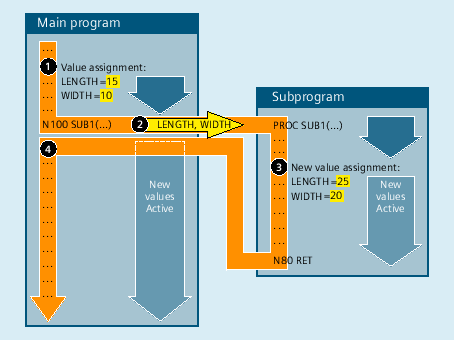

The calling program transfers not the value of a variable to the subprogram on a call-by-reference parameter transfer, but a reference (pointer) to the variable. This gives the subprogram direct access to the variable. In this way, not only the value visible in the subprogram is modified when a parameter value is changed, but also the value of the variables defined in the calling program. Call-by-reference parameter transfer therefore affects the calling program, even after the subprogram has ended.
The following figure illustrates call-by-reference parameter transfer using an example:
① | Value assignment to the variables LENGTH and WIDTH in the calling program. |
② | When the SUB1 subprogram is called, references to the two variables LENGTH and WIDTH are transferred to the subprogram. |
③ | New value assignment to the variables LENGTH and WIDTH in the subprogram. |
④ | Because of the new value assignment in the subprogram, the values of the variables defined in the calling program change. The new values are therefore active even after the return from the subprogram. |
| Note |
The call-by-reference parameter transfer is then only necessary if the transferred variable was defined locally in the calling program (LUD). Channel-global or NC-global variables do not have to be transferred, since these cannot be accessed directly from within the subprogram. |
A subprogram with call-by-reference parameter transfer is defined using the PROC keyword followed by the name of the program and a complete list of all the parameters with the VAR keyword, type, and name. The definition operation must appear in the first program line. As parameters, references to arrays can also be transferred:
PROC <ProgName> (VAR <Par1Type> <Par1Name>, VAR <Par2Type> <Par2Name>, ...)PROC <ProgName> (VAR <Array1Type> <Array1Name> [<m>,<n>,<o>], VAR <Array2Type> <Array2Name> [<m>,<n>,<o>], ...)Subprograms with parameter transfer must be declared with the keyword EXTERN (external) before they are called in the main program.
→ See Chapter "Subprogram call with parameter transfer (EXTERN)".
The actual subprogram call is made via the program name and specification of the transfer parameters.
→ See Chapter "Parameter transfer".
| Definition operation at the beginning of a program | |
| Keyword for call-by-reference parameter transfer | |
| Name of the program | |
| Data type of the 1st parameter (e.g. REAL, INT, BOOL) | |
| Data type of the 2nd parameter | |
... | ... | |
| Name of the 1st parameter | |
| Name of the 2nd parameter | |
... | ... | |
| Data type of the elements of array 1 (e.g. REAL, integer, BOOL) | |
| Data type of the elements of array 2 | |
... | ... | |
| Name of array 1 | |
| Name of array 2 | |
... | ... | |
| Array size Currently, up to 3-dimensional arrays are possible: | |
| Array size for 1st dimension | |
| Array size for 2nd dimension | |
| Array size for 3rd dimension | |
| Note |
The program name specified after the PROC keyword must match the program name assigned on the user interface. |
Definition of a subprogram with two parameters as reference:
Parameter 1: Reference to variable of type REAL with the name LENGTH
Parameter 2: Reference to variable of type REAL with the name WIDTH
Program code |
|---|
| PROC SUB_PROG(VAR REAL LENGTH, VAR REAL WIDTH) |
| ... |
See also:
Subprogram with call-by-reference parameter transfer (PROC, VAR) More information